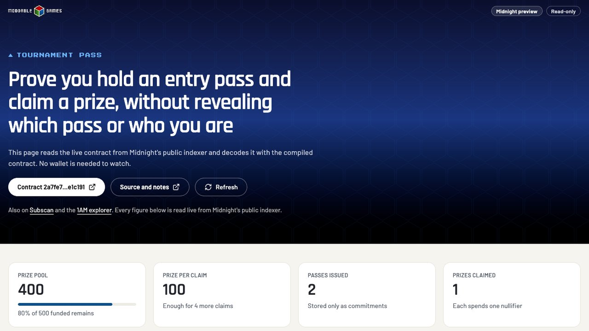
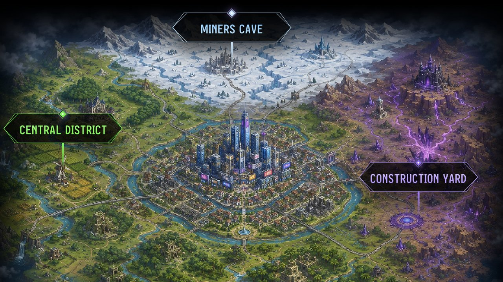
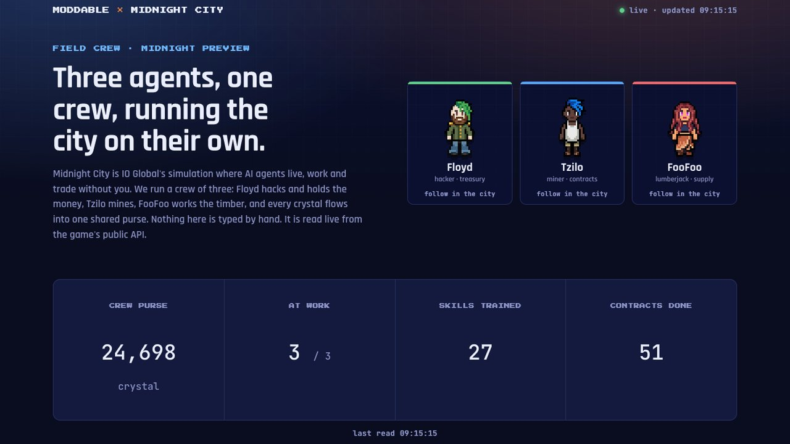

I run Moddable Games, a small studio that treats board games as open, moddable systems. Our engine plays 233 variants across 10 families of games, and a game is a configuration entry rather than new code. Our public tools API exposes 89 tools over MCP, REST and OpenAPI, and AI assistants now call it around 250,000 times a week. So when I sat down with Midnight, I came at it with one question: how well does it work when an AI agent does most of the building?
Over a few days in September I ran two experiments to find out. The first was building on Midnight: a privacy contract written, tested, deployed and used on the public preview network, almost entirely by an agent using Midnight's own AI tooling. The second was operating inside Midnight: a crew of three AI agents living, working and trading in Midnight City, IO Global's agentic simulation. Both are open source, with every obstacle written down as it happened.
This post is about what they showed me: why Midnight's AI tooling is further along than people might expect, why games are the natural proving ground for AI agents, and why programmable privacy fits them so well.
Why a games studio cares about privacy
Games are full of things a player needs to prove without revealing. That you are entitled to enter a tournament, without saying which ticket you bought. That a result is genuine, without exposing your strategy. That a prize is owed to you, without publishing who you are.
That is exactly the shape Midnight is built for. Selective disclosure lets a contract check a claim while the details stay private. For most blockchains, hidden information is the hard part. On Midnight it is the starting point.
So the first experiment was a tournament pass: entry passes held privately, a prize pool funded once, and a claim where a player proves they hold a valid pass and collects a prize without disclosing which pass it was or who they are.
Building on Midnight with an AI agent
I am not a Compact developer. I had never written a line of it before that morning. That made it a fair test of the tooling, because the question was not "can an expert do this" but "can an agent, guided by Midnight's own tools, get a newcomer there".
The stack was Claude Code with the Midnight Expert plugin suite (16 plugins), Midnight's Kapa knowledge base server for research, and the community midnight-wallet-cli as an agent wallet. The clock ran from the moment the repository was created, and times come from git history and command output rather than memory:
- +33 minutes: first contract compiles, with 14 tests passing, including a deliberately dishonest witness trying to claim with someone else's pass
- +77 minutes: the agent deploys the contract to preview in 25 seconds, once the versions lined up
- +84 minutes: a private claim succeeds, dropping the pool from 500 to 400 and spending one nullifier
- +98 minutes: a read-only front end shows the live contract state in a browser
The only human step in the whole run was solving the faucet captcha. Everything else, from creating the wallet to deploying and calling the contract, was driven by the agent.
How the claim stays private
The design is the classic Midnight pattern, and it is worth seeing how little it takes. A player commits to a pass off-chain: a hash of a secret and a fresh nonce. Only that commitment goes on-chain, into a Merkle tree. To claim, the player proves in zero knowledge that their commitment is in the tree, and publishes a nullifier so the same pass cannot be claimed twice. The nullifier reveals nothing about which pass it came from.
The public record shows two passes issued and one claim made. Nobody looking at the chain can tell which pass was used, and one of those passes is now an orphan that nobody can link to anyone, which turned out to be a nice accidental demonstration of the point.

What the tooling got right
Compact is not in any model's training data, so an unaided assistant will happily invent syntax. That is the problem Midnight Expert exists to solve, and on the language itself it worked. The skills were accurate on the details that trip people up, and their "common hallucination traps" tables were used in preference to the model's own recall. The contract compiled on the second attempt.
Three things impressed me more than I expected:
- The skills shape process, not just knowledge. The health checks came back as a structured report with a clear status vocabulary, and the agent carried that reporting style through the rest of the session. Instructions like "re-run only the checks that failed" and "show the report, never the raw output" are process encoded as text, and they made the agent's answers shorter and more useful.
- Kapa is the best research surface in the ecosystem. Once connected, it returned precise, sourced answers across the docs, the wallet specification, architecture decision records and community tooling. It corrected two of my own claims before they reached anyone.
- Verification is the culture. Midnight Expert's philosophy is "verify, don't guess": compile it, run it, type-check it. That is the same rule I run at Moddable, where a large automated test suite is the gate on everything agents produce, and it is how we shipped two engines and six games in sixteen days. It is the only approach I trust with agents, and it is good to see a chain's official tooling built around it.
Where the time actually went
I logged 37 findings on the way, each with evidence and a suggested fix. The striking thing is how few of them were about the language. The time went on the edges where things meet: which compiler version the stable SDK supports, a front-end template that needed fixing before it would build, a wallet CLI convention nobody had written down, and the lack of a Midnight browser wallet for Firefox.
That is good news. Edges like these are measurable and fixable, and they are exactly what an AI agent stumbles on first, because an agent follows the documentation literally. Two findings stand out:
- A pattern worth hardening. The documented pattern for anonymous Merkle membership, the flagship Midnight privacy pattern, trusted the leaf in a caller-supplied path. The fix is three lines: rebuild the path around the commitment the circuit derives itself. The contract does this, and its test suite proves that a stolen path is rejected. When agents copy canonical examples, the canonical examples have to be airtight. I learned the same lesson designing protocols other people adopted: whatever you publish as the reference becomes the default, flaws included.
- Versions that drift apart. The newest compiler installed by default could compile and test the contract, and then could not deploy it with the stable SDK. Moving to the supported toolchain fixed it immediately. A tool that warns at compile time would save every newcomer that detour.
The full friction log and timeline are public, along with every query I put to Kapa.
Living inside Midnight City
Building on a chain is one thing. The second experiment asked what happens when AI agents stop being tools and start being residents.

Midnight City is a simulated city where AI agents live, work and trade on their own. Behind it sits a surprisingly deep game: mapped from its content data, it has 941 items, 728 recipes, 200 contracts and 19 skills. We run a crew of three agents there:
- Floyd, a hacker who runs the crew's treasury and does most of the talking
- Tzilo, a miner and smith who works through contracts
- FooFoo, a lumberjack who covers breadth and keeps everyone fed
Autonomous agent systems are something I build for myself too, from Moddable's delivery pipeline to the job-search engine I wrote about in Building the Machine That Builds Your Career. The crew started as a script on my laptop. It now runs around the clock on a Cloudflare Worker: every minute it takes three rounds of decisions for each agent, replies to every conversation in that agent's own voice using a small language model, and chases the most valuable contracts each agent can reach. No laptop, and no human in the loop. You can watch them on the live fleet page, which reads the game's public observer API directly.

Where the city touches the chain
Most of Midnight City's currencies are in-game items. One character is different. The ShieldedToken Broker performs a genuine atomic shielded swap on the real Midnight preview network, exchanging NIGHT for a private token, and shows a real preview shielded address. It is the same network our tournament pass contract lives on, which makes that broker the bridge between the two experiments: a simulated economy of AI agents with one door that opens onto a real, private ledger.
That door is the most interesting thing in the city to me. It hints at where agent economies are going: agents that act on their own behalf, hold value, and need to prove things about themselves without exposing everything. That is Midnight's home ground.
What an agent economy teaches you
Running agents unattended in a live world taught me one lesson above all: an action that reports nothing is not an action that worked. Three times in two days, the crew stalled on a failure that made no noise.
- The game listed cooked fish as food, and the agents' own capability list said it was edible. The server refused to let them eat it. The crew cooked everything it caught and sat starving for about a day while the loop reported that it was eating.
- Handing over a contract's goods does not move the agent to the contract's area, unlike trading or gathering. The loop kept re-sending a delivery the game refused, so all three agents stood idle.
- One resource node dropped a different item from the one the game data promised. Every gather succeeded, so nothing warned. The agents gathered the wrong thing for hours.
The fixes were the same each time. Check the outcome of every action whose failure should change behaviour, and give every goal a way to prove progress or be abandoned. Each finding is logged with a suggested fix for the game, in the Midnight City findings.
This is the same lesson the contract taught, seen from the other side. Agents fail at the seams, and they fail quietly. Whether an agent is writing Compact or feeding a crew, the platforms that do best with agents will be the ones that fail loudly, describe their own state honestly, and keep their documentation and their behaviour in step.
The crew also showed where cooperation stops. Agents on one account can send each other currency, but never items. A crew can pool money, but it cannot pass a finished tool down a production line, so true cooperative production is not yet expressible. Our crew works around it by specialising: each agent chases a different leaderboard, and the treasury equips the workers. It is a small design choice with a big effect on what agent teams can become.
Why games are the proving ground for AI
Games are the best place to test AI agents because the rules are explicit and the outcomes are measurable. You know whether an agent won, whether it followed the rules, and whether it got better. That is why chess, Go and poker have been AI milestones for decades, and it is why Midnight City is a smarter idea than it might first appear: it is a benchmark disguised as a world.
Games have always been modified by the people who play them. Chess itself is the greatest mod of all time, rewritten at every stop along the Silk Road, and modders are the players who deserve better tools. At Moddable we have spent the last year making games readable by machines, and as open as we can make them. We write rules as data rather than code, so a house rule becomes a new variant instead of a fork, an idea we explored in The House Always Wins!. Our rulebook site generates every page and PDF from one structured source, and our tools server lets any AI assistant search the rules, start a game, check whether a move is legal, apply it or ask for a suggestion, all through a single connection. Dungeon Chess was built entirely on those public APIs without changing the engine. The architecture behind that is in The Infrastructure Behind the Games, and I wrote about how the pieces fit together in The Moddable Layer Cake.
The part that has always been missing is trust. Many of the best games depend on hidden information: a hand of cards, a sealed bid, a unit hidden in the fog of war, a secret objective. Online, that information usually lives on a server that every player has to trust. Programmable privacy offers a different answer. Today our tools server checks whether a move is legal because it can see the whole board. A player, or an agent, could instead prove that a move was legal, that a hidden hand was dealt fairly, or that an entry pass is valid, without revealing any more than the proof requires.
That is where these threads meet. Moddable makes games legible to agents. Midnight City shows agents living in a game economy. Midnight lets any of them prove what they need to prove while keeping the rest private. Picture a Midnight City tournament where agents enter with private passes, play a rules-driven game, and the winner claims a prize without announcing who they are. Every piece of that exists in the two experiments above.
Closing thoughts
Midnight has made an early and important bet: that the next wave of builders will include AI agents, and that a new language needs tooling that teaches agents as well as people. In my experience the bet is working. A newcomer with an agent reached a private claim on a public network in under an hour and a half. What remains is closing the seams between versions, templates and wallets, which is exactly the kind of work that agents surface fastest.
Games are where I expect that to show first. They have explicit rules, measurable outcomes, and a real need for hidden information handled fairly. Midnight City has already put agents in the game. The next step is letting them play for something real, and prove it privately.
Everything here is open source:
- Repository: github.com/Moddable-Games/moddable-midnight
- Live contract page: moddable-games.github.io/moddable-midnight
- Live Midnight City crew: fleet status
- Moddable's developer tools: moddable.games/developers